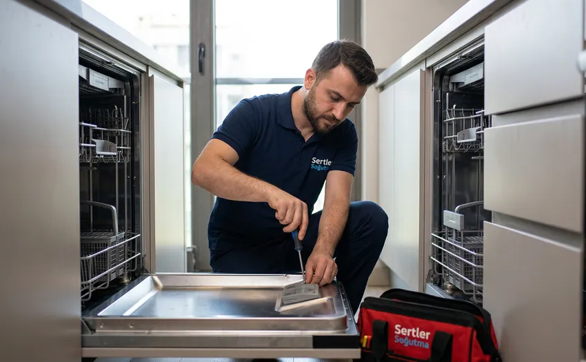
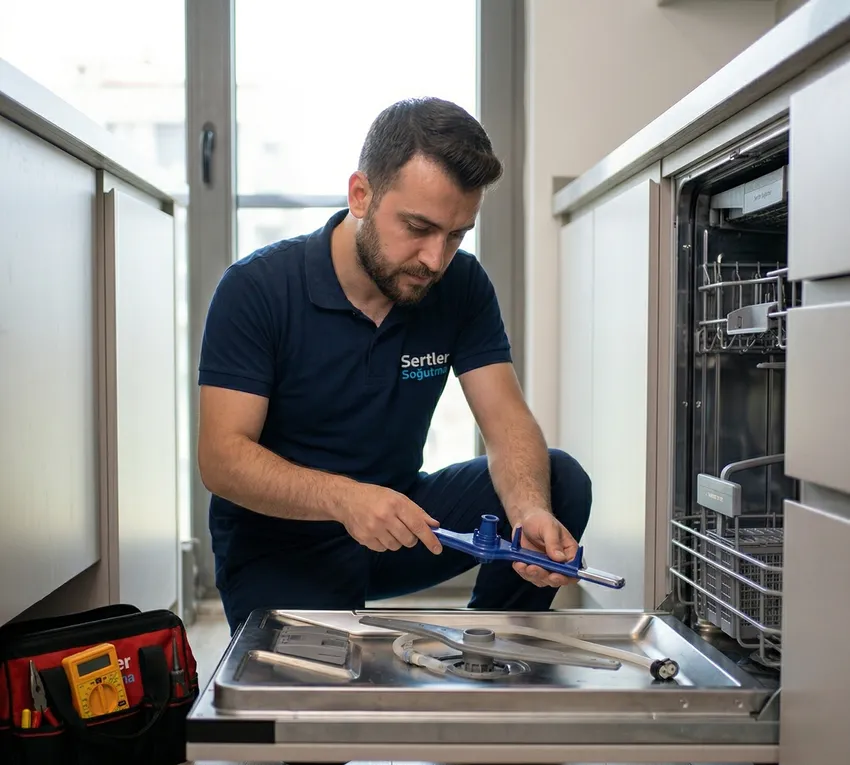

✨ Bulaşıklarınızda Leke Kalmasın: Sertler Soğutma Tarsus Bulaşık Makinesi Servisi ile Parlayan Sonuçlar!
Modern mutfakların en büyük yardımcısı olan bulaşık makineleri, sadece zaman kazanmamızı sağlamakla kalmaz, aynı zamanda su ve enerji tasarrufu yaparak ev ekonomimize de katkıda bulunur. Ancak, her gün defalarca kullanılan bu karmaşık teknolojik cihazlar, zamanla kireçlenme, mekanik aşınma veya elektronik arızalarla karşı karşıya kalabilir. Özellikle Tarsus gibi suyun kireç oranının yüksek olduğu bölgelerde, makinelerin iç aksamları daha hızlı yıpranabilmektedir. Bu noktada, profesyonel bir Tarsus Bulaşık Makinesi Servisi desteği almak, cihazınızın ömrünü uzatmak ve hijyen standartlarınızı korumak adına hayati bir önem taşır. Sertler Soğutma, Tarsus ve çevresinde yıllardır biriktirdiği tecrübeyle, bulaşık makinelerinizdeki tüm sorunları ortadan kaldırarak size mükemmel temizlikte bulaşıklar vaat ediyor.
Bulaşık makineniz suyu ısıtmıyor olabilir, tabaklarda beyaz lekeler bırakıyor olabilir veya programın ortasında durup hata kodu veriyor olabilir. Bu tür durumlar, genellikle kullanıcıları yeni bir cihaz alma düşüncesine itse de, aslında doğru bir Tarsus Bulaşık Makinesi Servisi müdahalesiyle cihazınız ilk günkü performansına döndürülebilir. Sertler Soğutma olarak bizler, sadece bozulan bir parçayı değiştirmekle kalmıyor; cihazın genel çalışma dinamiğini analiz ederek gelecekte oluşabilecek arızaları da önceden tespit ediyoruz. Müşteri memnuniyetini merkeze alan hizmet anlayışımızla, Tarsus halkının beyaz eşya konusundaki tüm ihtiyaçlarına profesyonel çözümler üretiyoruz. Bu makalede, bir bulaşık makinesinin neden arızalandığını, servis seçiminde nelere dikkat edilmesi gerektiğini ve firmamızın sunduğu ayrıcalıklı hizmetleri tüm detaylarıyla ele alacağız.

Tarsus Bulaşık Makinesi Servisi İnceleme Rehberi
Bir teknik servis seçmek, aslında cihazınızı kime emanet ettiğinizle ilgili bir güven meselesidir. Tarsus'ta pek çok servis seçeneği bulunsa da, gerçekten donanımlı ve dürüst bir Tarsus Bulaşık Makinesi Servisi bulmak bazen zorlayıcı olabilir. Bir servis çağırmadan önce dikkat etmeniz gereken en önemli husus, firmanın kurumsal yapısı ve teknik ekibinin uzmanlığıdır. Bulaşık makineleri; içinde pompa, rezistans, fıskiye, elektronik kart ve sensörlerin bulunduğu entegre bir sistemdir. Bu sistemlerden birindeki hata, tüm cihazın verimliliğini düşürür. Sertler Soğutma, her marka ve modelin (Arçelik, Beko, Vestel, Bosch, Samsung, Siemens vb.) kendine has teknik şemasına hakim uzmanlarla çalışır.
Servis seçiminde bir diğer önemli kriter ise hızdır. Akşam yemeğinden sonra biriken bulaşıkların makinede mahsur kalması, ev işlerinin bir anda kilitlenmesine neden olur. Hızlı ve mobil bir Tarsus Bulaşık Makinesi Servisi, bu krizi en kısa sürede çözer. Firmamız, Tarsus’un her mahallesine ulaşan geniş servis ağıyla bu hızı garanti etmektedir. Ayrıca, servis sonrası sunulan garanti belgesi, yapılan işin arkasında durulduğunun en somut kanıtıdır. Eğer bir servis yaptığı işe garanti vermiyorsa, kullanılan parçanın kalitesinden veya işçiliğinden şüphe edilmelidir. Sertler Soğutma, şeffaf hizmet politikasıyla her adımı raporlayarak kullanıcıya tam bir güven sunar.
Tarsus Bulaşık Makinesi Servisi Seçenekleri
Tarsus gibi gelişmiş bir ilçede servis seçenekleri oldukça fazladır; ancak her seçenek aynı kalite standartlarını sunmaz. Bazı servisler sadece basit mekanik arızalara müdahale edebilirken, modern inverter motorlu ve dokunmatik ekranlı cihazlar için yetersiz kalabilir. Profesyonel bir Tarsus Bulaşık Makinesi Servisi olan Sertler Soğutma, teknolojik gelişmeleri yakından takip ederek kadrosunu sürekli güncel tutar. Seçeneklerinizi değerlendirirken mutlaka firmanın referanslarına ve dijital platformlardaki kullanıcı yorumlarına göz atmalısınız. Bir firmanın geçmişte çözdüğü karmaşık arızalar, gelecekte sizin cihazınız için yapacaklarının teminatıdır.
Doğru Tarsus Bulaşık Makinesi Servisi seçeneği, size sadece tamir değil, aynı zamanda danışmanlık da sunmalıdır. Örneğin, makinenizdeki deterjan kalıntısı sorunu sadece bir arıza değil, yanlış deterjan seçimi veya hatalı yerleşimden de kaynaklanıyor olabilir. Sertler Soğutma ekipleri, adrese ulaştıklarında sadece arızayı gidermez, kullanıcıya cihazını nasıl daha verimli kullanabileceği konusunda ücretsiz bilgilendirme yapar. Bu eğitim odaklı servis anlayışımız, bizi bölgedeki diğer servis seçeneklerinden ayıran en temel özelliktir. Tarsus'ta güvenilir, dürüst ve donanımlı bir hizmet arıyorsanız, seçeneklerinizin en üstünde yer alan firmamızla tanışmanız cihazınız için en doğru karar olacaktır.
Tarsus Bulaşık Makinesi Servisi Danışma Hattı
Arıza anında panik yapmak yerine doğru bilgiye ulaşmak, sürecin en sağlıklı şekilde yönetilmesini sağlar. Sertler Soğutma tarafından kurulan profesyonel Tarsus Bulaşık Makinesi Servisi danışma hattı, sadece randevu oluşturmak için değil, aynı zamanda basit sorunlarda kullanıcılara rehberlik etmek için tasarlanmıştır. Telefonun ucundaki uzman temsilcilerimiz, cihazınızın verdiği hata koduna göre size ön bir bilgilendirme yapar. Bazen sadece bir filtrenin temizlenmesi veya bir tuş kilidinin açılması sorunu çözebilir; bu gibi durumlarda danışma hattımız sayesinde boş yere servis ücreti ödemekten kurtulabilirsiniz.
Eğer sorun telefonda çözülemeyecek kadar ciddiyse, Tarsus Bulaşık Makinesi Servisi danışma hattımız üzerinden size en yakın mobil ekibimiz derhal yönlendirilir. Danışma hattımız üzerinden aldığınız randevularda, size bir varış saati verilir ve bu saate kesinlikle uyulur. Bizim için zaman, müşterilerimizin en değerli sermayesidir. Bu hat üzerinden sadece arıza bildirimi değil, bakım randevuları, kurulum talepleri veya yedek parça sorgulamaları da yapabilirsiniz. Sertler Soğutma, Tarsus genelinde iletişimi en kolay ve en hızlı servis olma iddiasını bu profesyonel iletişim merkeziyle sürdürmektedir. İletişim merkezimize bıraktığınız her kayıt, dijital sistemlerimizde saklanır ve cihazınızın "servis geçmişi" oluşturulur. Böylece ilerleyen yıllarda tekrar bize ulaştığınızda, cihazınızın daha önce hangi parçalarının değiştiği veya ne tür bakımlardan geçtiği anlık olarak görülür. Bu süreklilik ve takip sistemi, kurumsal bir Tarsus Bulaşık Makinesi Servisi olmanın en büyük gerekliliğidir. Danışma hattımız, haftanın her günü ve günün her saati size destek vermek üzere hazır beklemektedir.
Sertler Soğutma ile Kurumsal Servis Hizmeti
Kurumsallık, bir teknik servisin profesyonelliğini belirleyen en üst düzey ölçüttür. Sertler Soğutma, Tarsus ve Mersin bölgesinde kurumsal kimliği ile fark yaratan bir Tarsus Bulaşık Makinesi Servisi olarak tanınır. Kurumsal hizmetimiz, teknisyenlerimizin iş kıyafetinden kullandığımız araçların donanımına, verilen servis formlarının resmiyetinden garanti süreçlerinin takibine kadar her aşamada kendini hissettirir. Müşterilerimizin evine girdiğimiz andan itibaren, mahremiyete saygılı, çözüm odaklı ve kibar bir tavır sergilemek bizim temel prensibimizdir.
Firmamız bünyesinde sunulan Tarsus Bulaşık Makinesi Servisi hizmeti, her zaman belirli bir standart dahilinde yürütülür. Arıza tespiti yapıldıktan sonra müşteriye net bir rapor sunulur ve onay alınmadan hiçbir işlem başlatılmaz. Şeffaflık, Sertler Soğutma'nın kurumsal kültürünün merkezindedir. Ayrıca, tüm onarımlarımızda orijinal yedek parça kullanımı zorunludur. Yan sanayi parçalar kısa vadede ekonomik görünse de, uzun vadede bulaşık makinesinin ana kartına veya motoruna zarar vererek çok daha büyük maliyetler çıkarabilir. Bizimle çalıştığınızda, kurumsal bir muhatap bulmanın rahatlığını yaşarsınız; bir telefonla ulaşabileceğiniz fiziksel bir ofisimiz ve uzman teknik kadromuz her zaman arkanızdadır.
Sertler Soğutma Elektronik Kart Onarımı
Bulaşık makinelerinin beyni olan elektronik kartlar, cihazın tüm program akışını, su sıcaklığını ve zamanlamasını yönetir. Özellikle voltaj dalgalanmalarının sık yaşandığı Tarsus bölgesinde, elektronik kart arızalarıyla sıkça karşılaşılmaktadır. Çoğu servis, kart arızalandığında doğrudan "kart değişimi" yoluna gider ki bu oldukça maliyetli bir işlemdir. Ancak Sertler Soğutma, profesyonel Tarsus Bulaşık Makinesi Servisi laboratuvarında bu kartların onarımını gerçekleştirebilen bir donanıma sahiptir.
Elektronik kart onarımı, yüksek derecede hassasiyet ve teknik bilgi gerektirir. Uzman teknisyenlerimiz, kart üzerindeki arızalı kondansatörleri, entegreleri veya dirençleri tespit ederek milimetrik lehimleme işlemleriyle kartı tekrar çalışır hale getirir. Bu sayede müşterilerimize çok daha ekonomik çözümler sunabiliyoruz. Eğer kart tamir edilemeyecek kadar ağır bir hasar almışsa (yanma veya işlemci hatası gibi), o zaman orijinal yedek kart ile değişim yapıyoruz. Tarsus Bulaşık Makinesi Servisi hizmetimizde, onarılan veya değiştirilen her kart için ayrı bir garanti süresi tanımlıyoruz. Kart onarımı sonrası cihazın tüm yazılımsal fonksiyonları test edilerek, fabrikasyon ayarlarında çalışması garanti altına alınır. Sertler Soğutma olarak teknolojiyi sadece kullanmıyor, aynı zamanda tamir ederek milli servetimizin korunmasına da katkı sağlıyoruz.
Sertler Soğutma Fıskiye Temizliği ve Bakımı
Bulaşık makinelerinde yıkama performansını belirleyen en kritik parça fıskiyelerdir. Alt ve üst fıskiyeler, içlerinden basınçlı su püskürterek bulaşıkların üzerindeki kirleri mekanik olarak sökerler. Ancak, zamanla yemek artıkları, kürdan parçaları, çekirdekler veya Tarsus’un kireçli suyu fıskiye deliklerini tıkayabilir. Fıskiye delikleri tıkandığında su basıncı düşer ve bulaşıklar makineden kirli veya lekeli çıkar. Sertler Soğutma, rutin Tarsus Bulaşık Makinesi Servisi bakımlarında fıskiye temizliğine özel bir önem verir.

Fıskiye bakımı sadece deliklerin iğneyle açılması değildir; fıskiyelerin dönmesini sağlayan mil ve yatakların da kireçten arındırılması gerekir. Eğer fıskiye yeterince hızlı dönmezse, su bulaşıkların her noktasına ulaşamaz. Ekiplerimiz, bakım sırasında fıskiyeleri yerinden sökerek özel solüsyonlarla kireç çözme işlemi uygular. Ayrıca, fıskiye kollarında oluşan çatlaklar veya aşınmalar da kontrol edilir; çünkü çatlak bir fıskiye su basıncını kaçırarak yıkama kalitesini düşürür. Tarsus Bulaşık Makinesi Servisi hizmetimiz kapsamında yapılan bu detaylı bakım, makinenizin yıkama kalitesini ilk günkü seviyesine çıkarır. Temiz fıskiyeler demek, daha az deterjanla daha parlak bulaşıklar demektir. Sertler Soğutma bakım paketleri sayesinde, fıskiyelerinizden motorunuza kadar tüm cihazınızın check-up işlemleri profesyonelce yapılır. Bakımı ihmal edilen fıskiyeler zamanla pompa motorunu da yorabilir; zira tıkalı delikler geri basınç oluşturarak pompanın zorlanmasına neden olur. Biz, sunduğumuz bu detaylı bakım hizmetiyle cihazınızı bütünsel bir koruma altına alıyoruz.
Duzenli bakim ve dogru kullanim, ariza riskini azaltir ve cihazin omrunu uzatir.
Tarsus’un En Yaygın Servis Ağı
Bir servis firmasının başarısı, müşterisine ne kadar yakın olduğuyla ölçülür. Sertler Soğutma, "Tarsus'un her yerinde, herkese en yakın servis" sloganıyla hareket ederek bölgesindeki en yaygın ağlardan birini kurmuştur. Şehir merkezindeki en dar sokaklardan kırsal mahallelere kadar her noktaya Tarsus Bulaşık Makinesi Servisi hizmetimizi ulaştırıyoruz. Geniş araç filomuz ve sahada sürekli aktif olan ekiplerimiz, lojistik gücümüzü temsil eder. Tarsus'un neresinde olursanız olun, bize ulaştığınızda size en yakın mobil aracımız GPS üzerinden tespit edilerek adresinize yönlendirilir.
Bu yaygın servis ağı, sadece ulaşım hızı değil, aynı zamanda parça tedarik hızı anlamına da gelir. Tarsus genelindeki farklı depo noktalarımız sayesinde, arıza anında ihtiyaç duyulan parçaya erişimimiz çok hızlıdır. Tarsus Bulaşık Makinesi Servisi arayan bir kullanıcı için bu hız, bulaşıkların elde yıkanmak zorunda kalmaması demektir. Sertler Soğutma olarak bizler, yerel bir güç olmanın avantajını kurumsal bir disiplinle birleştiriyoruz. Tarsus halkının bize olan teveccühü, yıllardır verdiğimiz kesintisiz ve hızlı hizmetin bir sonucudur. Yaygın servis ağımız sayesinde, sadece acil arızalarda değil, düzenli bakım taleplerinde de aynı gün içerisinde randevu verebilen nadir firmalardan biriyiz.
Tarsus Bölgesel Servis Noktaları
Tarsus'un büyüklüğü ve mahalle sayısının fazlalığı, bölgesel uzmanlaşmayı gerektirir. Sertler Soğutma, operasyonel verimliliği artırmak adına Tarsus'u stratejik servis bölgelerine ayırmıştır. Her bölgeden sorumlu olan deneyimli bir teknisyen grubumuz bulunmaktadır. Bu sayede, Yenice tarafındaki bir arıza ile Şelale civarındaki bir arıza aynı anda ve aynı kalitede çözüme kavuşturulur. Tarsus Bulaşık Makinesi Servisi olarak amacımız, coğrafi engelleri ortadan kaldırarak her noktaya kurumsal desteğimizi taşımaktır.
Bölgesel servis noktalarımızda görevli personellerimiz, o bölgenin su yapısını, voltaj özelliklerini ve genel kullanıcı alışkanlıklarını iyi bilirler. Örneğin, Tarsus'un bazı bölgelerinde su basıncı çok düşük olabilir; bu durumda teknisyenlerimiz bulaşık makinesinin su giriş ventilini buna göre optimize edebilir veya kullanıcıya bir hidrofor tavsiyesi sunabilir. Bölgesel uzmanlık, Tarsus Bulaşık Makinesi Servisi hizmetinin sadece tamirden ibaret kalmamasını, aynı zamanda yerel çözümler üretmesini sağlar. Sertler Soğutma, Tarsus'un her mahallesinde güvenin simgesi olmaya devam ediyor. Bizim için her bölge, hizmet kalitemizi sergilediğimiz birer referans alanıdır.
Rezistans Değişimi ve Arızaları
Bulaşık makinesinin en temel görevlerinden biri, suyu belirli bir sıcaklığa (genellikle 50°C - 70°C arası) getirerek yağların ve kirlerin çözülmesini sağlamaktır. Suyu ısıtan parça olan rezistans, doğrudan suyla temas halinde olduğu için kireçlenmeye en açık parçadır. Tarsus’un sert suları, rezistansın etrafını kısa sürede kalın bir kireç tabakasıyla kaplar. Bu tabaka, rezistansın suyu ısıtmasını engeller ve parçanın aşırı ısınarak çatlamasına veya yanmasına neden olur. Sertler Soğutma, Tarsus Bulaşık Makinesi Servisi kapsamında en sık gerçekleştirdiği işlemlerden biri olan rezistans değişimi konusunda uzmanlaşmıştır.
Makineniz suyu ısıtmıyorsa, yıkama sonunda bulaşıklar ıslak ve soğuk çıkıyorsa veya cihaz yıkama programının başında takılıp kalıyorsa, sorun yüksek ihtimalle rezistanstadır. Isınmayan suyla yapılan yıkama, bulaşıklardaki mikropları kırmaz ve yağları temizlemez. Sertler Soğutma teknisyenleri, rezistansın sağlamlık testini yaparak arızayı kesinleştirir. Eğer rezistans değişimi gerekiyorsa, cihazınızın markasına tam uyumlu yüksek kaliteli orijinal rezistanslar kullanılır. Bazı modern makinelerde rezistans, sirkülasyon pompasına entegre haldedir; bu tür durumlarda daha karmaşık bir müdahale gerekir ve biz bu konuda tam donanıma sahibiz. Tarsus Bulaşık Makinesi Servisi hizmetimiz dahilinde yapılan rezistans değişimlerinde, cihazın termostat ve NTC sensörleri de kontrol edilir. Çünkü bazen rezistans sağlam olsa bile, sensör hatası nedeniyle anakart ısıtma komutu vermiyor olabilir. Yanlış teşhis, müşteriye boş yere rezistans maliyeti çıkarır; ancak biz dijital ölçüm cihazlarımızla hatayı net olarak buluruz. Değişim sonrası makine yüksek ısı programında test edilerek suyun sıcaklığı kontrol edilir. Sert suların etkisini azaltmak adına değişim sonrası müşterilerimize doğru tuz kullanımını ve kireç önleyici yöntemleri de detaylıca anlatıyoruz. Sertler Soğutma ile cihazınız her zaman ideal sıcaklıkta yıkar ve bulaşıklarınız sterilize olur.
Sertler Soğutma ile Bulaşık Makinesi Verimliliği
Verimlilik, günümüz dünyasında hem bütçeyi korumak hem de çevreyi korumak adına en kritik konulardan biridir. Bulaşık makineleri doğru kullanıldığında ve bakımı yapıldığında, elde yıkamaya göre 10 kat daha az su harcar. Ancak arızalı veya bakımsız bir cihaz, daha uzun program süreleri ve daha yüksek elektrik tüketimi anlamına gelir. Sertler Soğutma, Tarsus Bulaşık Makinesi Servisi felsefesini sadece "bozuk makineyi çalıştırmak" üzerine değil, "cihazı en verimli hale getirmek" üzerine kurmuştur.
Bir bulaşık makinesinin verimliliğini etkileyen unsurlar arasında; filtrelerin temizliği, tuz ve parlatıcı ayarlarının Tarsus suyunun sertliğine göre yapılması ve iç aksamların kireçten arındırılmış olması yer alır. Tarsus Bulaşık Makinesi Servisi ekiplerimiz, her servis ziyaretinde cihazın enerji tüketim profilini de gözden geçirir. Eğer makineniz çok uzun sürüyor veya kurutma yapmıyorsa, bu durum gereksiz enerji sarfiyatına neden olur. Sertler Soğutma uzmanlığıyla yapılacak küçük bir kalibrasyon, aylık faturalarınızda belirgin bir düşüş sağlayabilir. Cihazınızın verimliliğini artırmak, sadece sizin ekonominize değil, dünyadaki su kaynaklarının korunmasına da hizmet eder.
Sertler Soğutma Kurulum ve Bağlantı Hizmetleri
Yeni bir bulaşık makinesi satın aldığınızda veya taşındığınızda, cihazın doğru kurulması gelecekteki arızaların %50'sini önler. Hatalı su bağlantısı sızıntılara, yanlış tahliye hortumu yerleşimi ise makinenin suyu geri almasına veya kötü kokulara neden olabilir. Sertler Soğutma, profesyonel Tarsus Bulaşık Makinesi Servisi kapsamında güvenli kurulum ve bağlantı hizmetleri sunmaktadır. Cihazın terazisinin ayarlanması (dengede durması), sarsıntısız ve sessiz çalışma için çok önemlidir.
Kurulum sürecinde su giriş hortumuna takılacak bir kireç önleyici filtre, Tarsus’ta yaşayan kullanıcılar için hayat kurtarıcı olabilir. Sertler Soğutma ekipleri, kurulum sırasında sadece fiziksel bağlantıları yapmaz; aynı zamanda makinenin ilk çalıştırma testini gerçekleştirir, su sertlik ayarlarını yapar ve kullanıcıya programlar hakkında detaylı eğitim verir. Yanlış yapılan tahliye bağlantısı, kanalizasyon kokusunun makinenin içine sinmesine ve bulaşıkların kokmasına yol açar; biz profesyonel yöntemlerle bu kokuyu engelleyen "S" bağlantı tekniklerini uygularız. Tarsus Bulaşık Makinesi Servisi kalitemizle yapılan her kurulum, cihazın garantisini korur ve size huzurlu bir kullanım başlangıcı sunar.
Sertler Soğutma Müşteri Deneyimi
Müşteri deneyimi, bir teknik servisle olan ilişkinizin başlangıcından sonuna kadar hissettiğiniz memnuniyetin toplamıdır. Sertler Soğutma için bir servis süreci; ilk telefonun açıldığı andan, teknisyenimizin kapıdan çıkışına ve servis sonrası aramalara kadar devam eden bir bütündür. Tarsus Bulaşık Makinesi Servisi sektöründe bizi zirveye taşıyan şey, müşterilerimize birer "numara" olarak değil, birer "komşu ve çözüm ortağı" olarak bakmamızdır. Teknolojik altyapımız kadar, insani değerlere verdiğimiz önem de müşteri deneyimimizi güçlendirir.
Müşterilerimizden gelen geri bildirimler, hizmetlerimizi sürekli geliştirmemize olanak tanır. Servis sonrası yaptığımız memnuniyet aramalarıyla, sunulan hizmetin kalitesini ölçeriz. Eğer bir hata veya eksiklik varsa, bunu telafi etmek için derhal harekete geçeriz. Sertler Soğutma olarak sunduğumuz Tarsus Bulaşık Makinesi Servisi deneyiminde, nezaket, şeffaflık ve dürüstlük değişmez kurallarımızdır. Teknisyenlerimiz evinize girdiğinde, ayak galoşu kullanımından çalışma alanının temiz bırakılmasına kadar her detaya dikkat eder. Fiyatlandırma aşamasında asla sürprizler yaşatmayız; ne konuşulduysa o uygulanır. Tarsus halkının bize olan sarsılmaz güveni, bu mükemmel müşteri deneyimi tasarımımızın en büyük ödülüdür. Bizimle çalışan her kullanıcı, sadece bir makinesini tamir ettirmiş olmaz; aynı zamanda ihtiyaç duyduğunda her zaman yanında olacak profesyonel bir ekibin desteğini kazanmış olur. Cihazınızla ilgili her türlü şikayetinizde, size özel çözümler sunan ve yüzünüzde bir tebessüm bırakmayı hedefleyen Sertler Soğutma, müşteri odaklı servis anlayışının Tarsus’taki öncüsüdür. Binlerce mutlu müşterimiz gibi siz de kaliteli hizmetin konforunu yaşayabilirsiniz.
Hemen Servis Talebinde Bulunun
Ariza tespiti, bakim veya onarim icin ayni gun icinde servis yonlendirebiliriz.
Sıkça Sorulan Sorular
Sertler Soğutma, Tarsus ve çevresinde Arçelik, Beko, Vestel, Bosch, Siemens, Profilo, Samsung, LG, Altus ve Regal gibi tüm popüler markaların yanı sıra daha az bilinen markaların da özel servis hizmetini vermektedir. Her marka için yedek parça stoğumuz mevcuttur.
Bulaşık makinenizde su sızıntısı, ısınma sorunu, aşırı gürültü veya temiz yıkama şikayeti başladığında vakit kaybetmeden randevu almalısınız. Erken müdahale, küçük bir sorunun ana karta veya motora zarar vermesini engeller.
Isınma sorunu genellikle rezistansın kireçlenip yanmasından veya anakart üzerindeki ısıtma rölesinin arızalanmasından kaynaklanır. Sertler Soğutma uzmanları arıza tespiti yaparak sorunu kesin olarak belirleyebilir.
Bu durum yanlış parlatıcı ayarı, kalitesiz deterjan kullanımı, tıkalı fıskiyeler veya tuz haznesinin sızdırmasından kaynaklanabilir. Tarsus Bulaşık Makinesi Servisi ekiplerimiz cihazınızı inceleyerek en uygun çözümü sunacaktır.
Evet, Sertler Soğutma olarak yaptığımız tüm işçilik ve değiştirdiğimiz tüm orijinal yedek parçalar 1 yıl süreyle firmamızın garantisi altındadır. İşlem sonrası size verilen servis formu garanti belgesi yerine geçer.
Firmamız piyasa koşullarına uygun, şeffaf ve ekonomik servis ücretleri uygular. Arıza tespiti yapıldıktan sonra onarım onayınız halinde servis ücreti toplam maliyete dahil edilir. Kesin rakam bilgisi cihaz başındaki teşhisten sonra verilir.
Evet, Sertler Soğutma'nın yaygın mobil servis ağı sayesinde Tarsus merkeze bağlı tüm kırsal mahallelere ve köylere bulaşık makinesi tamir ve bakım hizmeti götürüyoruz.
Tarsus'un su sertliği göz önüne alındığında, bulaşık makinesinin yılda en az bir kez profesyonel bakımdan geçmesini, kireçten arındırılmasını ve filtre/fıskiye kontrolünün yapılmasını öneriyoruz.
Evet, Sertler Soğutma bünyesinde bulunan elektronik laboratuvarında, birçok modelin ana kart tamiri ekonomik olarak gerçekleştirilmektedir.
Kötü koku genellikle tahliye hortumundaki tıkanıklıklar, filtrede biriken yemek artıkları veya hatalı su bağlantısından kaynaklanır. Tarsus Bulaşık Makinesi Servisi bakım hizmetimizle bu sorunu kökten çözebilirsiniz.
Sertler Soğutma, Tarsus’ta teknik servisin güvenilir, hızlı ve kurumsal adresidir. Bulaşık makinelerinizdeki her türlü sorunda uzman kadromuz ve teknolojik imkanlarımızla yanınızdayız. Leke bırakmayan, pırıl pırıl sonuçlar ve uzun ömürlü cihazlar için Tarsus Bulaşık Makinesi Servisi ihtiyaçlarınızda bizi arayın. Kalitenin ve güvenin tadını çıkarın! Profesyonel bir dokunuşla bulaşık makineleriniz ilk günkü gibi parlasın.